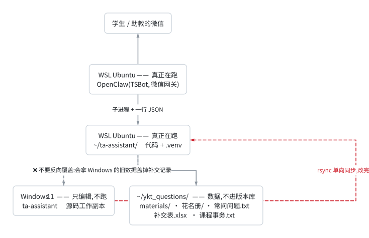

部署与 OpenClaw 接入指南
⚠️ 时效性(2026-09-20 校订) 这份是 2026-04 的初版部署说明,§4 的 OpenClaw 接入方式(子进程 / HTTP)没有变; 但数据放哪(§0)、
.env填什么(§1)、建索引会看到什么(§2)、 日常怎么维护(§6)都已经不一样了 —— 逐处改过,改了的地方标【当前】。 端到端跑通与排障请看wechat_end_to_end.md; 知识库怎么重建请看knowledge_base.md§7(那份是最新的)。
0. 目录放置#
【当前】代码和数据是分开的,别再往 Downloads 里的中文目录放。
三方关系一张图(左边是"编辑",中间是"跑",右边是"存";箭头方向就是数据流向, 只有一条固定方向,反着传会丢业务数据):

这张图的源码(想改的话复制这段)
flowchart TD
%% caption: 代码放在哪、数据放在哪、同步只能往哪个方向走
WX["学生 / 助教的微信"]
WS["Windows 11 —— 只编辑,不跑<br/>ta-assistant 源码工作副本"]
OCL["WSL Ubuntu —— 真正在跑<br/>OpenClaw(TS Bot,微信网关)"]
CODE["WSL Ubuntu —— 真正在跑<br/>~/ta-assistant/ 代码 + .venv"]
DATA["~/ykt_questions/ —— 数据,不进版本库<br/>materials/ · 花名册/ · 常问问题.txt<br/>补交表.xlsx · 课程事务.txt"]
WX <--> OCL
OCL -->|"子进程 + 一行 JSON"| CODE
WS -->|"rsync 单向同步,改完就传一次"| CODE
CODE --> DATA
CODE -.->|"❌ 不要反向覆盖:会拿 Windows 的旧数据盖掉补交记录"| WS原来的画法用了三个
subgraph框 +flowchart LR,画出来 1350px 宽、 左半幅还是空的 —— 横排布局会把每层的节点在竖直方向居中, 第一层只有一个节点时就孤零零悬在中间。改成竖排、把"跑在哪台机器" 写进节点文字、五个数据文件并成一个节点,现在 734px,一屏能看全。
materials/ 是 RAG 语料目录,build_index.py 会把里面每个文件解析进索引。
名单不是教学资料 —— 它进去之后,学生问"作业什么时候交"可能检索到一份名单。
换学期别忘:把新名单覆盖
花名册/电路基础理论课_学生名单.xlsx,再跑.venv/bin/python scripts/check_roster.py—— 退出码 0 才算换好。 补交表跟着名单走(同目录、同课名,由名单文件名推导),所以换名单这一处动作 就把两样都换了,不用记得改第二个地方;新学期第一笔补交会自动把表建出来。 (这里原来写着"补交表的文件名还是数电时期的,不用改名" —— 那条已经作废: 数电那份表在 WSL 里是数字电路与逻辑设计实验（一）补交表.xlsx,已改名为.tests-polluted-20260920归档,里面 398 行全是单测写的假数据; 现在的补交表是按课推导出来的新文件。始末见knowledge_base.md§9。)
| 位置 | 说明 | |
|---|---|---|
| 代码 | ~/ta-assistant/(WSL 原生目录) |
在 WSL 里跑,不要直接在 /mnt/c/... 下跑 |
| 数据 | ~/ykt_questions/(WINDOWS_ROOT) |
materials/(教学资料)+ 花名册/(名单和补交表)+ 常问问题.txt + 课程事务.txt(还没有,见下) |
名单单独放
花名册/,不要放进materials/。materials/是 RAG 语料目录,build_index.py会把里面每个文件解析进索引 —— 名单不是教学资料。 (原先那份成绩记分册就躺在materials/里,被解析进去了,见 §3.1。)换学期:把新导出的名单覆盖
~/ykt_questions/花名册/电路基础理论课_学生名单.xlsx这个文件名,然后.venv/bin/python scripts/check_roster.py—— 退出码 0 才算换好了。 只是"把文件拷过去"不够:名单读不出来时补交照样登记成功,只是校验状态永远写 「名单缺失」,不跑这条就发现不了。始末见knowledge_base.md§8 第 12 条。
课程事务.txt(现行事务口径)目前还没建,功能处于休眠状态 —— 助教写一份就有,格式见knowledge_base.md§6.6,不用重建索引。 | 大文件 |/public/tmp/...(服务器侧)、OCR 缓存在~/ykt_questions/_ocr_cache/| 与代码解耦 |
为什么不用 /mnt/c/...: 一是跨文件系统 IO 慢(索引/OCR 都吃这个),
二是原来的 Windows 路径含中文与全角括号,在 WSL 里容易出编码问题。
config.WINDOWS_ROOT 默认就是 ~/ykt_questions,不用改任何代码。
历史遗留提醒:
C:\Users\52880\Downloads\ykt_questions\那份是旧位置,运行时不再读。 唯一的判据是「补交表在谁那儿」—— 运行时用的那份目录下有补交表.xlsx(工作表补交记录);旧那份还是 4 月的成绩记分册。 要改回去必须先合并补交记录,否则丢业务数据。 Windows 侧那份仍然是编辑源码的工作副本(改完同步到~/ta-assistant/)。
1. 环境安装(一次性)#
cd ~/ta-assistant
bash scripts/setup.sh
setup.sh 会做:
1. apt install libreoffice-core poppler-utils(用来转 .doc 和 pdf 解析)
2. 创建 .venv 虚拟环境
3. pip install -r requirements.txt
4. 预下载 jieba 词典
5. 从 .env.example 复制一份 .env
【当前】然后编辑 .env,填大模型的 key:
LLM_API_KEY=你的_OPENCODE_GO_API_KEY
LLM_MODEL=deepseek-v4.1-flash
默认通道是 OpenCode Go(OpenAI 兼容接口,key 在 https://opencode.ai/auth 拿)。
LLM_API_KEY 留空会自动退回旧的 MiniMax 通道(保留作回滚),那条才需要
MINMAX_API_KEY / MINMAX_GROUP_ID。业务代码只认 LLM_*,换供应商 = 改 .env。
别把 key 写进任何会进版本库的文件 ——
.env已在.gitignore里, 用它就行;不要写进脚本、文档或日志。
2. 构建知识库索引(一次性 / 资料更新后)#
cd ~/ta-assistant
source .venv/bin/activate
# 【当前】先备份旧索引,出问题能一键回退
cp data/index/bm25_index.pkl data/index/bm25_index.pkl.bak.$(date +%Y%m%d-%H%M%S)
python scripts/build_index.py
成功后会看到(数字随语料变化,看的是"文件数和块数是不是符合预期",不是背数字):
扫描目录: /home/<user>/ykt_questions/materials
解析文件: 114 个 | 生成片段: 3165 块
BM25 索引已保存: data/index/bm25_index.pkl
改了语料光重建索引还不够 —— 要跑一遍检索评测确认没把原来的资料挤掉:
bash python scripts/eval_retrieval.py --compare # 有回归则退出码 1完整的资料更新流程(语料生成 → 数字审计 → 重建索引 → 评测 → 抽查) 见knowledge_base.md§7,那里是按顺序排好的七步。
3. 本地冒烟测试#
# 测试 1:补交
python -m src.main --message "我作业漏交了 张三 20230001 第1次"
# 测试 2:FAQ
python -m src.main --message "Proteus 在哪下载?"
# 测试 3:RAG
python -m src.main --message "什么是竞争冒险?怎么消除?"
# 测试 4:【记录】通路(**刻意用一条会被拒收的**:带假学号)
# 既证明路由到了后端,又不会往手写的常问问题.txt 里写坏数据
.venv/bin/python -m src.main --message '【记录】问题:测试 20259999999 在哪交作业
标准答案:交给学委'
# 预期:{"type": "record", "reply": "❌ 没记: 问题里有学号 …"}
每次都应该看到 JSON 返回和 data/logs/YYYY-MM.log 里新增一行。
【当前】注意前缀:走 openclaw_bridge.py 时消息必须带前缀
(【转发学生提问】),不带会被当成非学生消息直接跳过。
src/main.py 的 --message 入口不受这个限制,所以上面三条不带前缀也能测。
【记录】 是个例外,它本来就不带学生转发前缀 —— 它是助教自己发的。
所以 main.process() 里它的闸门在学生转发闸门之前,顺序反了会被判成
"非学生消息"丢掉,而且看起来一切正常。改 main.py 时注意这条(回归测试
test/test_record.py 里有两条专门钉这个顺序)。
⚠️ 自检 【记录】 千万不要拿一条正常的问答去试 —— 那会真的写进助教手写的
常问问题.txt(那份文件没有版本库兜底)。用上面那条带假学号的,它会被拒收。
# 端到端(带前缀),这才是 OpenClaw 实际走的那条路:
./.venv/bin/python scripts/openclaw_bridge.py --message '【转发学生提问】什么是叠加原理'
离线自检(不联网、不调 API,约 5 秒):
.venv/bin/python -m pytest test/ -q # 全绿(当前 389 例)
.venv/bin/python scripts/eval_retrieval.py --compare # 退出码 0
.venv/bin/python scripts/check_roster.py # 退出码 0,并报出名单人数
check_roster.py必须看退出码,不能只看它有没有崩。 名单读不出来时 补交照样登记成功,只是校验状态永远写「名单缺失」—— 这个缺陷就是这样 藏了几个月的(knowledge_base.md§8 第 12 条)。换学期换名单之后尤其要跑。
4. OpenClaw 接入#
两种接法功能完全一样,区别只在"谁来管这个进程":
方案 A:子进程(当前在用)
- 每条消息起一次进程,无状态
- 不用常驻服务,重启机器不用管它
- 每次都要重新
import一遍,慢一点 - 挂了就是一条命令失败,退出码和 stderr 都在眼前
- ✅ [当前] 实际接的就是这个
方案 B:HTTP 服务
- 常驻进程,长连接
- 省掉每次启动开销,响应更快
- 得自己管进程:崩了要有人拉起来
- 端口被占 / 服务没起来 → 微信那头只表现为"没反应",很难查
- 当前没有在用
方案 A:子进程调用(最简单,推荐先用这个)#
在 OpenClaw 的"接收到助教转发"的钩子里,把整条消息透传给:
/home/<你的用户名>/ta-assistant/.venv/bin/python \
/home/<你的用户名>/ta-assistant/scripts/openclaw_bridge.py \
--message "<转发内容>"
脚本会在 stdout 打印 JSON:
{"type": "question", "reply": "Proteus 需要自己找激活版..."}
OpenClaw 把 reply 字段发回微信即可。
方案 B:HTTP 服务(需要长连接)#
启动:
cd ~/ta-assistant
source .venv/bin/activate
uvicorn src.main:app --host 127.0.0.1 --port 8765
OpenClaw 调用:
POST http://127.0.0.1:8765/process
Content-Type: application/json
{"message": "转发内容"}
响应:
{"type": "submission", "reply": "✅ 已登记..."}
在 OpenClaw 端的伪代码示例#
假设 OpenClaw 支持 Python 插件:
import subprocess, json
def on_teacher_forward(message: str) -> str:
result = subprocess.run(
["/home/ta/ta-assistant/.venv/bin/python",
"/home/ta/ta-assistant/scripts/openclaw_bridge.py",
"--message", message],
capture_output=True, text=True, timeout=30
)
data = json.loads(result.stdout)
return data["reply"]
5. 路径提示词(重要!)#
【当前】默认已经绕开了中文路径(数据在 ~/ykt_questions),所以下面这条只在
你非要用 Windows 侧中文目录时才需要看。项目里所有路径都已在 src/config.py 用
Path 封装,不要在 shell 里裸写中文路径,会挂。
真要指到 Windows 侧,推荐用 .env 覆盖而不是改代码:
# .env
WINDOWS_ROOT=/mnt/c/Users/YOUR_USERNAME/Downloads/ykt_questions
(迁移前先合并补交记录,理由见 §0。)
6. 日常维护#
| 场景 | 操作 |
|---|---|
| 加新 FAQ | 在 常问问题.txt 里按 Q:\nA:\n\n 格式新增,不需要重建索引(每次启动现建) |
| 加/改课程资料 | 不是"拖进去跑一下 build_index"这么简单 —— 语料要先过生成/增强/审计,见 knowledge_base.md §7 的七步流程 |
| 重建索引 | 先备份,再 python scripts/build_index.py,然后 python scripts/eval_retrieval.py --compare |
| 补交表想导出 | 直接打开 Excel(路径见 config.py) |
| 看日志 | tail -f ~/ta-assistant/data/logs/$(date +%Y-%m).log |
| 清空当月日志 | rm ~/ta-assistant/data/logs/$(date +%Y-%m).log |
改完提示词后必做的一步:抽查几个真实提问(见 knowledge_base.md §7 的 ⑧)。
大模型唯一真正危险的地方是悄悄改一个数值,而那是最不容易被一眼看出来的错误。
7. 故障排查#
| 症状 | 原因 | 解决 |
|---|---|---|
FileNotFoundError: ...ykt_questions... |
数据目录不对 / 没放到 WINDOWS_ROOT |
看 .env 里的 WINDOWS_ROOT,或用 §5 覆盖 |
ImportError: no module named jieba |
未激活 venv | source .venv/bin/activate |
| LLM 401 / 403 | key 错或没填 | 查 .env 的 LLM_API_KEY;留空会退回 MinMax 通道,报错可能是旧通道的 key |
LLM 返回 400 MissingSessionID |
OpenCode Go 要求 x-opencode-session 请求头 |
别删 LLM_SESSION_HEADER 的默认值 |
| 回复全是"抱歉,知识库未就绪" | 没跑 build_index.py | 跑一次 |
| 答复里冒出无关章节 | BM25 的 IDF 兜底把虚词当成了正证据 | 见 knowledge_base.md §3.6;确认 apply_lucene_idf() 还在被调用 |
| 补交表里姓名乱码 | Excel 用 GBK 打开 | 用 Excel 2019+ 或 WPS 打开 |
| 回复始终是"非学生消息,未处理" | OpenClaw 剥了前缀或字符被 normalize | 查 data/logs/ 的 process_input 事件,对比 first_20_codepoints 与 prefix_used 的 Unicode;很可能是 OpenClaw TS 层把前缀字符改了或提前剥掉了 |
OpenClaw 报 bridge exited 0: ...日志内容...? |
TS 端把 stderr 当错误了 | bridge 侧保证 stdout 是纯 JSON;TS 侧应只看 exit code + JSON.parse,不要拼接 stderr 内容 |
bash: ... syntax error: unexpected end of file(脚本内容看着完全正常) |
文件是 CRLF 行尾,被 rsync 原样搬到 WSL:shebang 成了 #!/usr/bin/env bash\r,bash 还会在别的行上撞到 \r |
见下面「行尾必须是 LF」 |
行尾必须是 LF#
本项目的用法是「Windows 侧编辑 → rsync 到 WSL 侧运行」,字节是原样过去的, 所以行尾不是风格问题,是功能问题:
- shell 脚本带 CRLF 在 WSL 上跑不起来。实测
bash -n scripts/setup.sh报syntax error: unexpected end of file—— 脚本看上去完全正常,报错却指向文件末尾, 这种症状最容易让人往"少了个fi"的方向查,白花时间。 docs/*.html是scripts/md2html.py生成的(显式newline="\n")。 如果检出时被转成 CRLF,那"网页层是否和 md 同步"就不能用python scripts/md2html.py --all docs/ --hub && git diff --stat docs/判断了 —— 会满屏是红。 这也是页脚印「内容指纹」而不是「生成于 <时刻>」的原因:指纹来自源 md 的字节, md 不变则 HTML 一个字节都不变,上面那条命令才能真正当校验用。
仓库根的 .gitattributes 用 * text=auto eol=lf 兜住这件事。本机 core.autocrlf=true
(Windows 常见默认)会把检出的文本文件转成 CRLF,只有显式 eol=lf 才盖得住。
test/test_repo_hygiene.py 另外扫一遍仓库里有没有 CRLF,防止有人用记事本之类
的工具改完文件又把它带回来。
8. 从零到上线的时间预估#
build_index.py 重建索引【当前】首次搭建(逐项):
| 步骤 | 预估时间 |
|---|---|
| 放好代码与数据目录 | 1 分钟 |
跑 setup.sh 安装依赖 |
5-10 分钟 |
配 .env 里的大模型 key |
2 分钟 |
跑 build_index.py 建索引 |
1-2 分钟(视语料大小) |
冒烟测试 + 离线自检(pytest / --compare) |
2 分钟 |
| OpenClaw 接入调通 | 10-20 分钟 |
| 总计 | 30-60 分钟 |
它算的是"机器和代码都准备好了,把它跑起来",不是"从一堆 PDF 到能答疑"。
真正的第一步 —— 把扫描版教材 OCR 进库(47.9 分钟)、装配语料、
再逐条生成中文详细解析 —— 是另一天的工作量,
见 knowledge_base.md §3.5 / §9.5。
docs/deployment.md · 内容指纹 e6c0e4e9
内容与 Markdown 一致,这里的图/表/目录是构建期渲染出来的